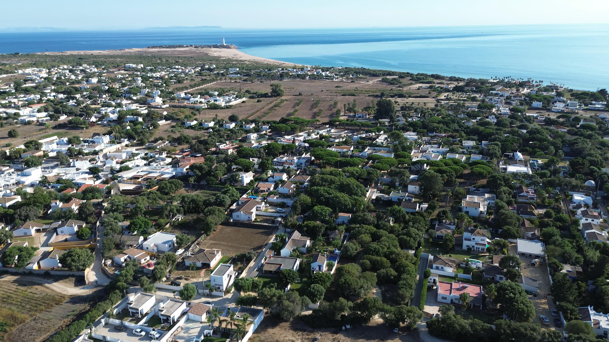
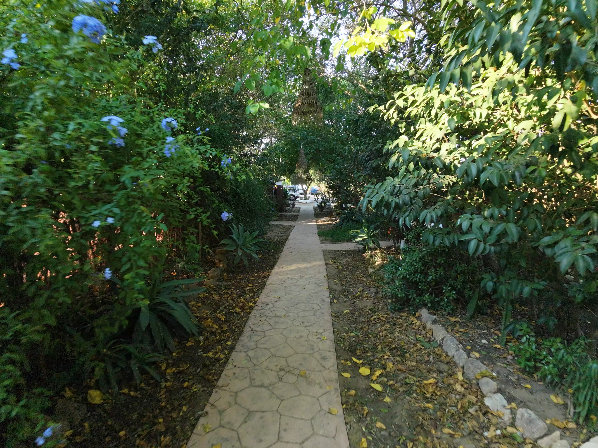

01 — El lugar
El mar marca
el ritmo.
Un pequeño universo entre el pinar, los caminos de arena y las playas abiertas de la Costa de la Luz.
Ver alojamientos ↗Zahora · Cádiz
Un lugar para
llegar ligero.
Aquí el día empieza con luz natural y termina cuando el cielo se vuelve rosa. Estamos cerca de todo lo que importa y suficientemente lejos del ruido.
Ven a conocernos ↗

PLAYAS · PINARES · CAMINOS · CIELOS INMENSOS
Tu próxima pausa
empieza aquí.
Descubre un rincón de Cádiz donde descansar también significa volver a ti.
Consultar disponibilidad ↗